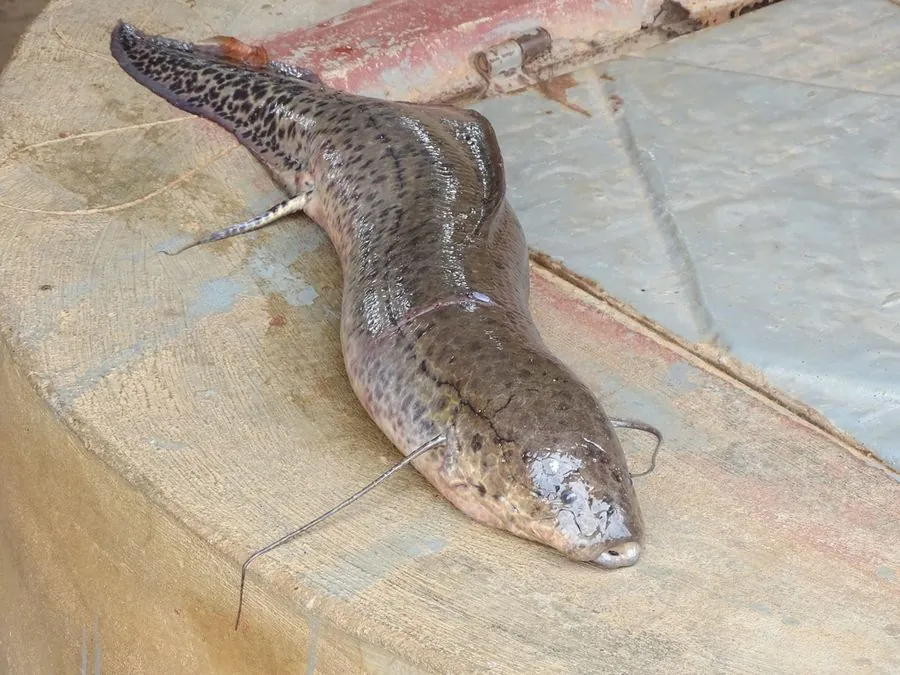

鱼类 · 动物界
非洲肺鱼 Protopterus annectens

能呼吸空气、在旱季钻进泥茧中休眠的肉鳍鱼，与四足动物亲缘关系较近，是研究脊椎动物登陆的重要物种。
- 分类
- 门脊索动物门纲肉鳍鱼纲目非洲肺鱼目科非洲肺鱼科属非洲肺鱼属
- 栖息环境
- 非洲西部和中部的沼泽、湖泊和季节性水体，旱季在泥中休眠
- 地理分布
- 非洲西部和中部，包括塞内加尔、尼日尔河和刚果河流域
- 保护级别
- 暂无评估
物种志
非洲肺鱼体呈长圆柱形，像鳗鱼，胸鳍和腹鳍细长呈丝状，尾鳍尖细。体表覆盖着小鳞片，体色灰褐或黄褐，腹部颜色较浅。成鱼体长一般 30–60 cm，最大可超过 1 m。它最特别的结构是鳔：鳔的内部有许多分隔，血管丰富，功能类似肺，可以直接呼吸空气。
非洲肺鱼分布于非洲西部和中部（塞内加尔、尼日尔河、刚果河等流域）的沼泽、湖泊和季节性水体。它是肉食性鱼类，吃鱼类、甲壳类、昆虫和软体动物。旱季水体干涸时，非洲肺鱼会钻进泥中，分泌黏液把周围的泥土黏结成茧，只留一个小孔呼吸，进入休眠状态，等雨季来临再爬出来，这种休眠可以持续数月甚至更久。繁殖期它会在水草间筑巢产卵。非洲肺鱼属于肉鳍鱼类，与四足动物的祖先关系密切，是研究脊椎动物从水到陆演化的重要物种。目前它没有IUCN 的正式评估，中国未将其列入国家重点保护野生动物名录。
形态与习性
- 食性肉食性，吃鱼类、甲壳类、昆虫和软体动物
- 体长一般 30–60 cm，最大可超过 1 m
- 呼吸鳔内部分隔、血管丰富，功能类似肺，可直接呼吸空气
- 休眠旱季钻进泥中结成泥茧休眠，可维持数月
- 繁殖繁殖期在水草间筑巢产卵
- 分类地位属于肉鳍鱼类，与四足动物亲缘关系较近
趣味知识
- 非洲肺鱼的鳔像肺一样可以直接呼吸空气。
- 旱季水干时，它钻进泥土里结成茧休眠，等雨季再出来，可休眠数月。
- 肺鱼属于肉鳍鱼类，与四足动物的亲缘关系比普通鱼类更近。